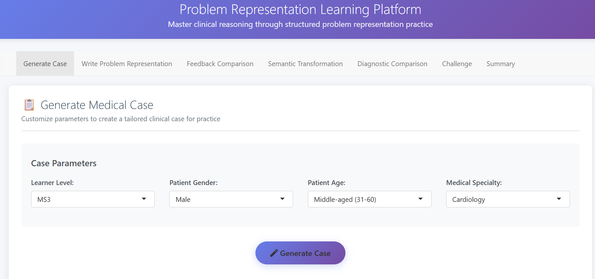
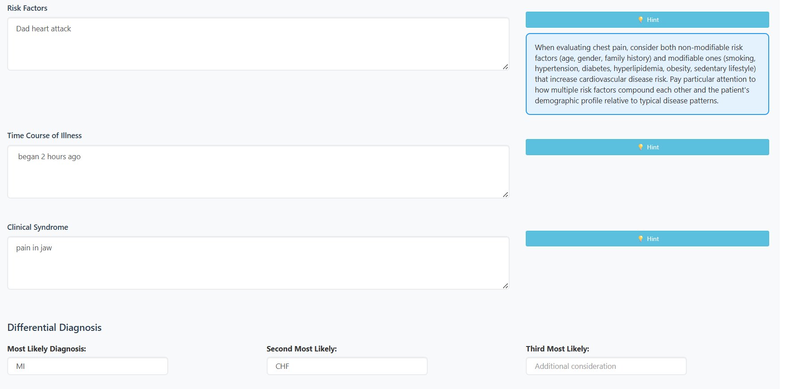
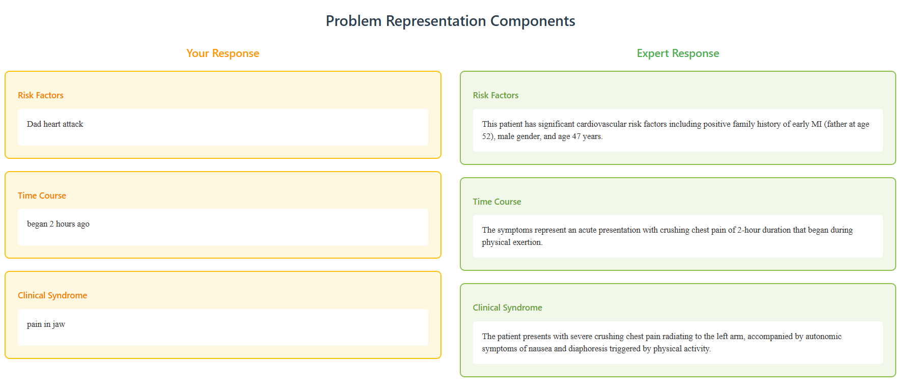
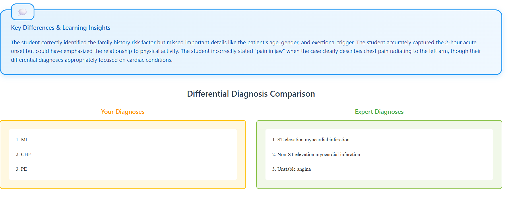
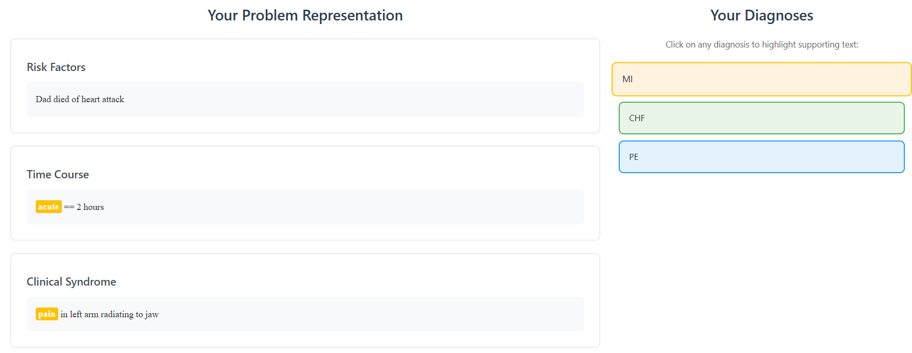
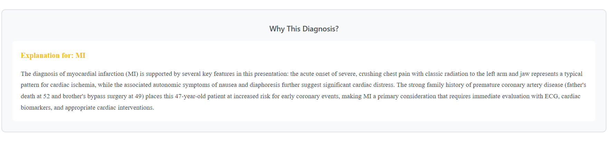
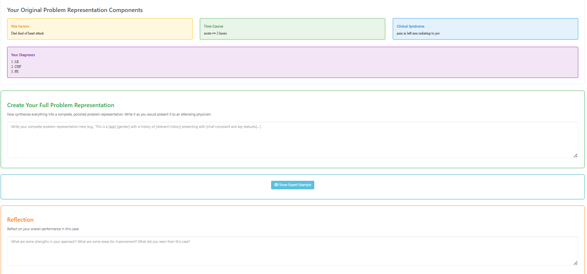
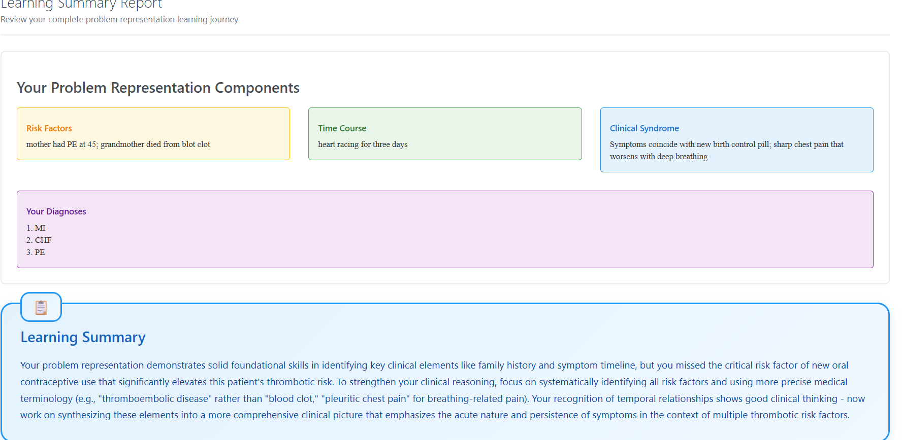

Check out screenshots from our Shiny app!
Please note that these screenshots are from the app's beta version -- we are continuing to develop the app
AI-supported case generation
PR exercise and AI-generated hints
AI-generated feedback for each PR subcomponent
AI-generated narrative feedback specific to each diagnosis
AI-detected connections between PR language and identified diagnoses
AI-generated rationale for diagnosis selection
Opportunity for user to modify PR without compartmental scaffolds and reflect on performance
AI-generated summary provided to user